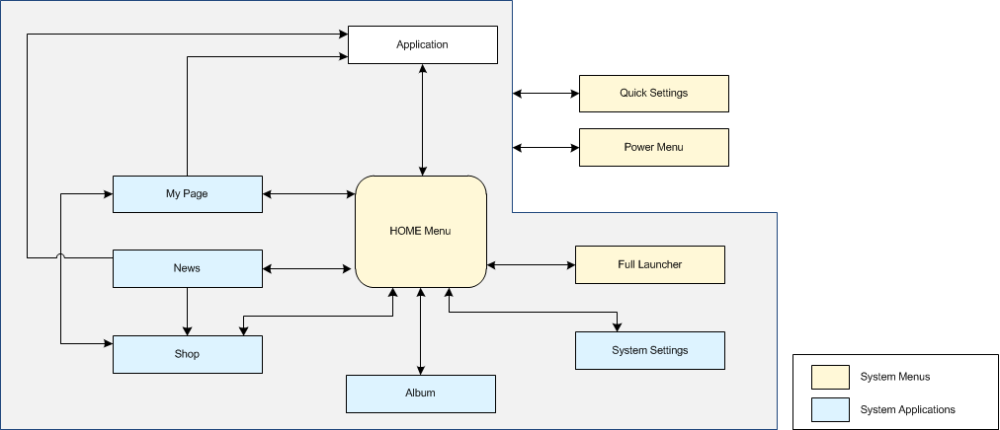

This menu can be opened at any time by pressing the HOME Button on the console. The following diagram of all the functional translations centered on the HOME Menu shows the transitions to each feature.

Pressing the HOME Button during application play pauses the application and transitions to the HOME Menu.
However, you may implement applications in a special way where they continue to run in the background when you choose that option. We are currently discussing the level of support from the application.
We are currently discussing whether to allow blocking transitions to the HOME Menu if the HOME Button was pressed during application gameplay. The Nintendo 3DS system and the Wii U provided the option to skip HOME Menu transitions during communications, including Internet play. The NX might not provide that option, however.
CONFIDENTIAL